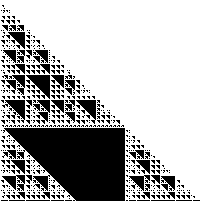
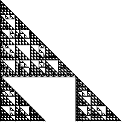
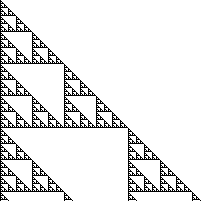
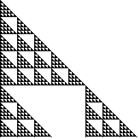

7. (mod 10) Shading the boxes of Pascal's triangle with numbers congruent to
|  |  |  |  |
| 0 (mod 10) | 1, ... 8, or 9 (mod 10) | 1, 2, 3, 4, 6, 7, 8, or 9 (mod 10) | 1, 3, 5, 7, or 9 (mod 10) |
| Observe Z10 has two proper subgroups, |
|
|
| Then |
| Also, |
Return to Other Mod Exercises.